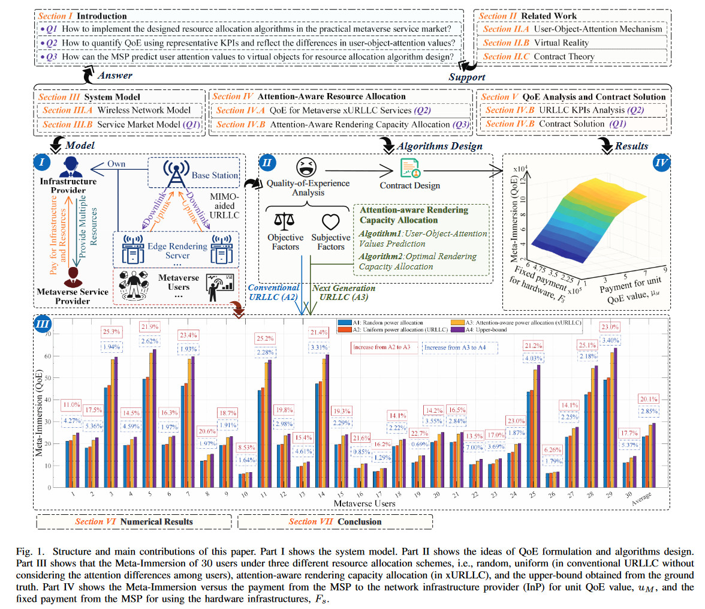
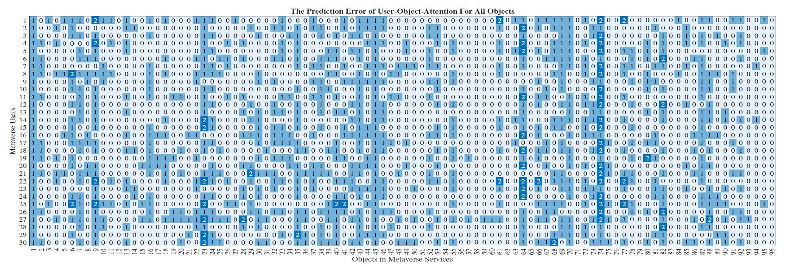

Metaverse encapsulates our expectations of the next-generation Internet, while bringing new key performance indicators (KPIs). Although conventional ultra-reliable and low-latency communications (URLLC) can satisfy objective KPIs, it is difficult to provide a personalized immersive experience that is a distinctive feature of the Metaverse. Since the quality of experience (QoE) can be regarded as a comprehensive KPI, the URLLC is evolved towards the next generation URLLC (xURLLC) with a personalized resource allocation scheme to achieve higher QoE. To deploy Metaverse xURLLC services, we study the interaction between the Metaverse service provider (MSP) and the network infrastructure provider (InP), and provide an optimal contract design framework. Specifically, the utility of the MSP, defined as a function of Metaverse users' QoE, is to be maximized, while ensuring the incentives of the InP. To model the QoE mathematically, we propose a novel metric named Meta-Immersion that incorporates both the objective KPIs and subjective feelings of Metaverse users. Furthermore, we develop an attention-aware rendering capacity allocation scheme to improve QoE in xURLLC. Using a user-object-attention level dataset, we validate that the xURLLC can achieve an average of 20.1% QoE improvement compared to the conventional URLLC with a uniform resource allocation scheme.
This repository accompanies the paper "Attention-aware Resource Allocation and QoE Analysis for Metaverse xURLLC Services" by Hongyang Du et al., accepted by IEEE JSAC. The paper is available on ArXiv.
To set up a new conda environment, execute:
conda create --name aqoe python==3.10Activate the environment with:
conda activate aqoeInstall the package using pip:
pip install ealsStart the program by running main.py in the Main directory.
For details on the User-Object-Attention Level (UOAL) dataset, refer here. After generating the sparse user-object-attention matrix and saving it as 'my_rating.csv' in the 'Seg2Rating' directory, run main.py in the Main directory to get and save predicted user-object attention values as 'pred.txt'.
Comparison between predicted values and ground truth:
This repository utilizes code from the eALS paper for fast online matrix factorization. If using eALS in your research, please cite accordingly:
eALS: A Python implementation of the element-wise alternating least squares (eALS) for fast online matrix factorization
GitHub: https://github.com/newspicks/ealsIf this work supports your research, please cite:
@article{du2023attention,
title={Attention-aware resource allocation and QoE analysis for metaverse xURLLC services},
author={Du, Hongyang and Liu, Jiazhen and Niyato, Dusit and Kang, Jiawen and Xiong, Zehui and Zhang, Junshan and Kim, Dong In},
journal={IEEE Journal on Selected Areas in Communications},
year={2023},
publisher={IEEE}
}